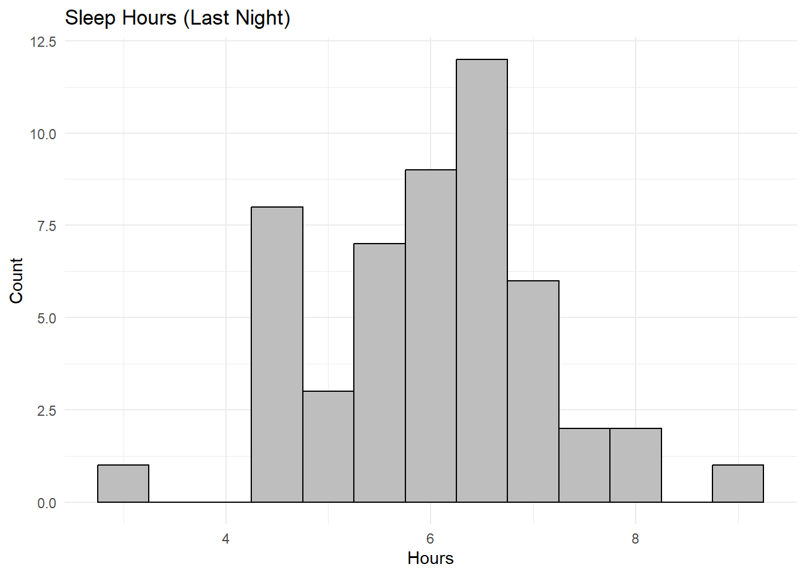
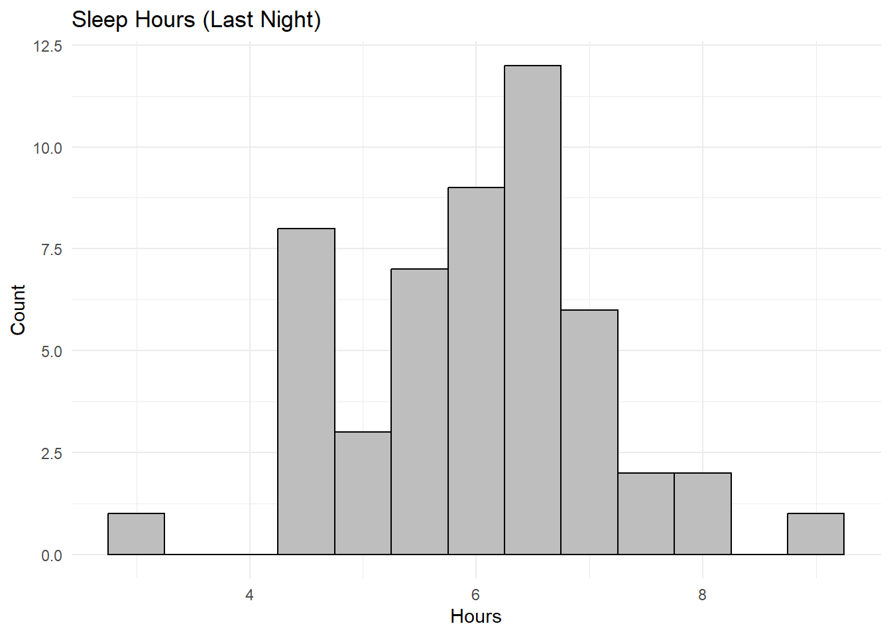

sleep %>%
ggplot(aes(x = hours)) +
geom_histogram(binwidth = 0.5, color = "black", fill = "gray") +
labs(title = "Sleep Hours (Last Night)",
x = "Hours",
y = "Count") +
theme_minimal()
Dataset:
sleep <- ma206data::sleep.
Variable of interest:hours(units: hours).
Q1. Population of interest, parameter (in words), parameter (symbol)
- Population of interest: All Cadets at West Point
- Parameter (in words): The mean number of hours of sleep Cadets got last night.
- Parameter (symbol): \(\mu\).
Q2. Null hypothesis (words + symbols)
- Null hypothesis (words): The population mean sleep time is 6.25 hours.
- Symbol: \(H_0: \mu = 6.25\).
Q3. Alternative hypothesis (words + symbols)
- Alternative hypothesis (words): The population mean sleep time is less than 6.25 hours.
- Symbol: \(H_a: \mu < 6.25\).
Q4. Sampling plan (n = 75)
Select a simple random sample of 75 Cadets from the entire Corps so that every Cadet has an equal chance to be selected.
Q5. Variable measured
Measure hours of sleep last night. This is a quantitative variable (measured in hours).
Q6. Representativeness (good)
Answers will vary.
Q7. Representativeness (not good) + bias/unbiased fill-in
- Not representative: The class is a convenience sample from one course and instructor on a single day. It may over‑ or under‑represent certain groups.
- Fill‑in: Convenience sampling may be biased, whereas simple random sampling is unbiased.
Q8. Make a histogram of the hours variable.

Q9. Compute the sample statistics (mean, SD, n). Describe histogram.
| n | mean_hours | sd_hours |
|---|---|---|
| 51 | 6.0098 | 1.116 |
Q10. Preliminary evidence that mean < 6.25?
If \(\bar{x} < 6.25\) and histogram mass is below 6.25, that suggests preliminary evidence, but we should still run the test: inference is needed.
Q11. If \(H_0\) is true, how do sample means behave?
They would be approximately normally distributed (for large n), centered at 6.25 with SD = \(\sigma/\sqrt{n}\). Since \(\sigma\) is unknown, we use \(s\).
Q12. Calculate \(\frac{s}{\sqrt{n}}\) (standard error of null distribution).
Q13. Is the observed mean surprising under \(H_0: \mu=6.25\)?
| xbar | mu0 | diff | sd_null | standardized_diff |
|---|---|---|---|---|
| 6.0098 | 6.25 | -0.2402 | 0.1562 | -1.5377 |
If the standardized difference is large in magnitude, it suggests the sample mean is surprising under the null.
Q14. Calculate the t‑statistic and p‑value for \(H_a: \mu < 6.25\).
| t_statistic | p_value |
|---|---|
| -1.537 | 0.06525 |
Q15. Can we generalize?
Because the data come from three sections of one instructor’s course on one day, it is a convenience sample. Results may not generalize to the entire Corps. Use caution!
Q16. Concerns about design and conclusions
- One‑night snapshot may not represent typical sleep.
- Convenience sampling, not random.
- Limited to one instructor’s sections.
- Self‑reported hours may have error.
- Practical vs. statistical significance.
Q17. Next steps
- Use random or stratified random sampling.
- Collect across multiple nights, sections, majors.
- Consider collecting covariates (major, class, workload, etc).
Q18. If you rejected \(H_0\), does that prove \(\mu < 6.25\)?
No. Hypothesis tests provide evidence, not proof. Results are subject to sampling error and model assumptions.
Q19. If you rejected \(H_0: \mu = 6.5\), does that prove \(\mu \neq 6.5\)?
No. Rejection means the observed data are inconsistent with \(H_0\), but we cannot prove the true mean. Confidence intervals provide interval estimates rather than definitive proof.